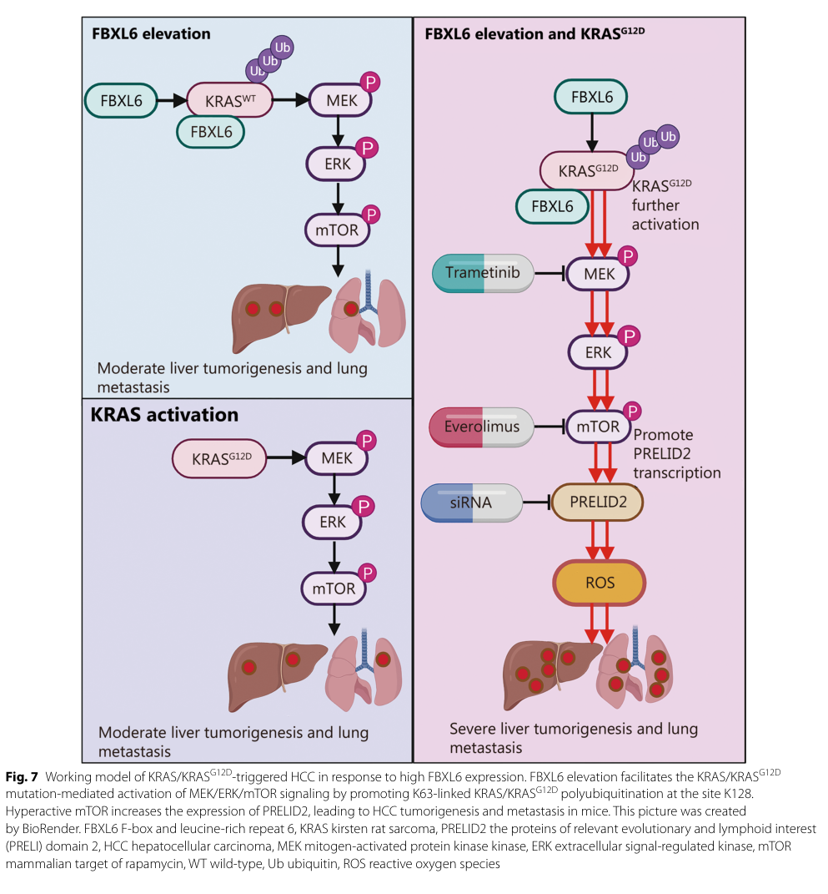

FBXL6 (F-box/LRR-repeat protein 6, FBL6) is a member of the FBXL subfamily of F-box proteins, characterized by an N-terminal F-box domain (residues ~10-162) followed by a C-terminal region of ~11 leucine-rich repeats (LRRs). It functions as the substrate-recognition subunit of an SCF (SKP1-CUL1-F-box) E3 ubiquitin ligase complex: the F-box domain docks the protein onto SKP1 (and through it CUL1 and the catalytic RING subunit RBX1), while the LRR region binds substrate proteins, frequently in a phosphodegron-dependent manner. FBXL6 catalyzes both degradative and non-degradative ubiquitination depending on the substrate. In hepatocellular carcinoma it promotes K48-linked degradation of phosphorylated p53 (recognizing p53 phosphorylated on Ser315 and ubiquitinating Lys291/Lys292), thereby relieving tumor-suppressive signaling, and degrades the ETS transcription factor ETV6/TEL and cyclin A2 (CCNA2). Conversely it mediates K63-linked, non-degradative ubiquitination that stabilizes or activates clients including the chaperone HSP90AA1 (sustaining c-MYC), the GTPase KRAS (ubiquitinating Lys128 to enhance RAF binding and MEK/ERK/mTOR signaling), and transketolase (TKT, recruited after VRK2 phosphorylation of Thr287, driving ROS-mTOR signaling, PD-L1 induction, and immune evasion). FBXL6 is broadly but weakly expressed across tissues (low tissue specificity) and is frequently overexpressed in hepatocellular carcinoma and acute myeloid leukemia, where it represents a tumor dependency, particularly in FLT3-ITD-mutated AML. The SCF mechanistic framework implies cytosolic and nuclear sites of action depending on substrate; explicit subcellular localization has not been firmly mapped experimentally.
| GO Term | Evidence | Action | Reason |
|---|---|---|---|
|
GO:0019005
SCF ubiquitin ligase complex
|
IEA
GO_REF:0000002 |
ACCEPT |
Summary: InterPro/domain-based electronic assignment that FBXL6 is part of an SCF ubiquitin ligase complex, consistent with its F-box domain and documented SKP1/CUL1 interaction.
Reason: FBXL6 has a canonical F-box domain and directly interacts with SKP1 and CUL1, making SCF complex membership the correct core cellular component for an F-box substrate receptor.
Supporting Evidence:
file:human/FBXL6/FBXL6-uniprot.txt
Substrate-recognition component of the SCF (SKP1-CUL1-F-box protein)-type E3 ubiquitin ligase complex.
|
|
GO:0005515
protein binding
|
IPI
PMID:19159283 Array MAPPIT: high-throughput interactome analysis in mammal... |
KEEP AS NON CORE |
Summary: IntAct interaction with SKP1 (WITH/FROM UniProtKB:P63208) captured by the Array MAPPIT high-throughput screen. The SKP1 interaction is the defining F-box-domain partnership, but the bare protein binding term is uninformative.
Reason: Records the functionally meaningful FBXL6-SKP1 interaction (the basis of SCF assembly), but bare protein binding is uninformative per curation guidelines; the SCF-complex annotation captures this relationship.
Supporting Evidence:
file:human/FBXL6/FBXL6-uniprot.txt
Q8N531; P63208: SKP1; NbExp=4; IntAct=EBI-2322696, EBI-307486;
|
|
GO:0005515
protein binding
|
IPI
PMID:27705803 A High-Density Map for Navigating the Human Polycomb Complex... |
KEEP AS NON CORE |
Summary: IntAct interaction with SKP1 (WITH/FROM UniProtKB:P63208) captured by the Polycomb complexome AP-MS study. Bare protein binding is uninformative.
Reason: Records the FBXL6-SKP1 interaction underlying SCF assembly, but bare protein binding is uninformative; captured by the SCF-complex annotation.
Supporting Evidence:
file:human/FBXL6/FBXL6-uniprot.txt
Q8N531; P63208: SKP1; NbExp=4; IntAct=EBI-2322696, EBI-307486;
|
|
GO:0005515
protein binding
|
IPI
PMID:33961781 Dual proteome-scale networks reveal cell-specific remodeling... |
KEEP AS NON CORE |
Summary: IntAct interaction with SKP1 (WITH/FROM UniProtKB:P63208) captured by the BioPlex dual proteome-scale interactome. Bare protein binding is uninformative.
Reason: Records the FBXL6-SKP1 interaction, but bare protein binding is uninformative; captured by the SCF-complex annotation.
Supporting Evidence:
file:human/FBXL6/FBXL6-uniprot.txt
Q8N531; P63208: SKP1; NbExp=4; IntAct=EBI-2322696, EBI-307486;
|
|
GO:0005515
protein binding
|
IPI
PMID:40205054 Multimodal cell maps as a foundation for structural and func... |
KEEP AS NON CORE |
Summary: IntAct interaction with SKP1 (WITH/FROM UniProtKB:P63208) captured by a multimodal cell-map interactome study. Bare protein binding is uninformative.
Reason: Records the FBXL6-SKP1 interaction, but bare protein binding is uninformative; captured by the SCF-complex annotation.
Supporting Evidence:
file:human/FBXL6/FBXL6-uniprot.txt
Q8N531; P63208: SKP1; NbExp=4; IntAct=EBI-2322696, EBI-307486;
|
|
GO:0031146
SCF-dependent proteasomal ubiquitin-dependent protein catabolic process
|
NAS
PMID:33234069 The FBXL family of F-box proteins: variations on a theme. |
ACCEPT |
Summary: ComplexPortal/NAS assignment that FBXL6, as an SCF substrate receptor, participates in SCF-dependent proteasomal degradation. This is the core biological process for an F-box protein, and FBXL6-specific degradative substrates are now reported in the literature (e.g. phospho-p53, ETV6/TEL, cyclin A2).
Reason: Consistent with FBXL6 being a substrate-recognition subunit of an SCF E3 ligase; SCF-dependent proteasomal degradation is the canonical core process for F-box/LRR proteins. Beyond the documented SKP1/CUL1 association, FBXL6 has reported degradative substrates including phosphorylated p53 (K291/K292), ETV6, and CCNA2, supporting this process term. Note that FBXL6 also mediates non-degradative (K63-linked) ubiquitination of other clients (HSP90AA1, KRAS, TKT), which is not captured by this proteasomal-catabolism term.
Supporting Evidence:
file:human/FBXL6/FBXL6-uniprot.txt
Substrate-recognition component of the SCF (SKP1-CUL1-F-box protein)-type E3 ubiquitin ligase complex.
file:human/FBXL6/FBXL6-deep-research-falcon.md
FBXL6 binds phosphorylated p53 (S315) and promotes p53 polyubiquitination at K291/K292 leading to proteasomal degradation, consistent with a role in dampening p53 signaling.
|
|
GO:0004842
ubiquitin-protein transferase activity
|
TAS
PMID:10531035 Identification of a family of human F-box proteins. |
MODIFY |
Summary: Author statement from the original F-box family paper attributing ubiquitin-protein transferase activity to FBXL6. However, F-box proteins are substrate-recognition subunits and are not themselves the catalytic transferase; the transferase activity resides in the RING subunit (RBX1)/E2. This term over-attributes the catalytic activity to the receptor.
Reason: FBXL6 is the substrate-recognition adaptor of the SCF complex, not the catalytic ubiquitin transferase. The more accurate molecular function is ubiquitin-like ligase-substrate adaptor activity; catalysis is contributed by RBX1/E2.
Proposed replacements:
ubiquitin-like ligase-substrate adaptor activity
Supporting Evidence:
file:human/FBXL6/FBXL6-uniprot.txt
Substrate-recognition component of the SCF (SKP1-CUL1-F-box protein)-type E3 ubiquitin ligase complex.
file:human/FBXL6/FBXL6-deep-research-falcon.md
This implies that FBXL6 is expected to act primarily as an adaptor/substrate receptor—rather than a catalytic enzyme—governing which client proteins are ubiquitinated and what downstream signaling consequences follow.
|
|
GO:0006508
proteolysis
|
TAS
PMID:10531035 Identification of a family of human F-box proteins. |
MARK AS OVER ANNOTATED |
Summary: Author statement linking FBXL6 to proteolysis, reflecting its presumed role in SCF-mediated protein degradation. This is correct but very generic.
Reason: Generic proteolysis is far less informative than the specific SCF-dependent proteasomal ubiquitin-dependent protein catabolic process (GO:0031146) already annotated; FBXL6 does not itself perform peptide-bond hydrolysis.
Supporting Evidence:
file:human/FBXL6/FBXL6-uniprot.txt
Substrate-recognition component of the SCF (SKP1-CUL1-F-box protein)-type E3 ubiquitin ligase complex.
|
Q: What are the physiological substrates recognized by the FBXL6 leucine-rich repeat domain, and in which tissues or conditions are they degraded?
Q: Does FBXL6 form a catalytically active SCF complex in vivo, and what determines its expression and assembly relative to other FBXL paralogs?
Q: Does FBXL6 have a non-oncogenic homeostatic role (e.g. in mitochondrial ribosomal protein quality control), distinct from the oncogenic substrate axes (p53, KRAS, TKT, HSP90AA1) described in hepatocellular carcinoma and AML?
Experiment: Perform affinity purification-mass spectrometry of tagged FBXL6 (stabilized with proteasome and neddylation inhibitors) to identify candidate substrates enriched over a substrate-binding-deficient LRR mutant.
Experiment: Reconstitute SCF-FBXL6 (SKP1-CUL1-RBX1-FBXL6) in vitro and test ubiquitination of candidate substrates, and use CRISPR knockout followed by quantitative proteomics to identify proteins stabilized upon FBXL6 loss.
The research report should be a detailed narrative explaining the function, biological processes, and localization of the gene product. Citations should be given for all claims.
You should prioritize authoritative reviews and primary scientific literature when conducting research. You can supplement
this with annotations you find in gene/protein databases, but these can be outdated or inaccurate.
We are specifically interested in the primary function of the gene - for enzymes, what reaction is catalyzed, and what is the substrate specificity? For transporters, what is the substrate? For structural proteins or adapters, what is the broader structural role? For signaling molecules, what is the role in the pathway.
We are interested in where in or outside the cell the gene product carries out its function.
We are also interested in the signaling or biochemical pathways in which the gene functions. We are less interested in broad pleiotropic effects, except where these elucidate the precise role.
Include evidence where possible. We are interested in both experimental evidence as well as inference from structure, evolution, or bioinformatic analysis. Precise studies should be prioritized over high-throughput, where available.
FBXL6 (F-box/LRR-repeat protein 6; UniProt Q8N531) is consistently described in primary literature as an F-box protein with leucine-rich repeats (LRRs), aligning with the UniProt domain architecture (F-box + LRR substrate-binding module) and supporting that the retrieved literature corresponds to the intended human protein rather than a different gene sharing a similar symbol. (li2021fbxl6degradesphosphorylated pages 1-2)
SCF (SKP1–CUL1–F-box) E3 ubiquitin ligases are modular cullin-RING ligases in which the F-box protein functions as the substrate receptor: the F-box domain binds SKP1, and the C-terminal substrate-binding module (LRRs in FBXL proteins) engages substrates, positioning them for ubiquitin transfer by the E2 recruited to the RBX1 RING subunit. (sperk2024fbxl6isa pages 1-2, tan2013parallelscfadaptor pages 1-2)
Within the F-box superfamily, the “FBXL” subclass is defined by the presence of C-terminal leucine-rich repeats that mediate substrate interaction, while the N-terminal F-box binds SKP1 to assemble an SCF complex. This implies that FBXL6 is expected to act primarily as an adaptor/substrate receptor—rather than a catalytic enzyme—governing which client proteins are ubiquitinated and what downstream signaling consequences follow. (tan2013parallelscfadaptor pages 1-2, sperk2024fbxl6isa pages 1-2)
FBXL6’s most defensible “primary function” from the available literature is as an SCF-type ubiquitin ligase substrate receptor/adaptor that (i) promotes proteasomal degradation of certain targets and (ii) can also add non-degradative ubiquitin chains that stabilize/activate specific client proteins in oncogenic contexts. (shi2020fbxl6governscmyc pages 1-2, sperk2024fbxl6isa pages 1-2)
A consolidated view of experimentally supported substrates/interactors and consequences is provided in the table artifact below.
| Substrate/target | Evidence type | Ubiquitin linkage (K48/K63/unspecified) | Modified residue(s) if known | Biological consequence | Key citation (with year, DOI URL) |
|---|---|---|---|---|---|
| p53 (phospho-p53 S315) | Interaction with phospho-p53, polyubiquitination assay, proteasomal degradation studies | Unspecified in primary snippet; summarized as K48-linked in later review table | p53 K291, K292; interaction depends on p53 S315 phosphorylation | FBXL6 promotes p53 degradation, relieving tumor-suppressive signaling and promoting tumor growth | Li et al., 2021, https://doi.org/10.1038/s41418-021-00739-6 (li2021fbxl6degradesphosphorylated pages 1-2, cheng2025fboxproteinsin pages 5-7) |
| HSP90AA1 | IP/MS identification, co-immunoprecipitation, in vivo ubiquitination assay, HCC functional assays | K63 | Not specified in gathered snippets | Stabilizes HSP90AA1, thereby sustaining c-MYC activity and promoting HCC growth | Shi et al., 2020, https://doi.org/10.1186/s12964-020-00604-y (shi2020fbxl6governscmyc pages 1-2) |
| KRAS / KRASG12D | Co-IP, ubiquitination assay, RAS activity assay, transgenic mouse models, patient correlation analyses | Unspecified in primary snippet; summarized as K63-linked in later review table | KRAS K128 | Activates KRAS signaling, increases RAF binding and MEK/ERK/mTOR/PRELID2/ROS signaling, promoting HCC tumorigenesis and lung metastasis | Xiong et al., 2023, https://doi.org/10.1186/s40779-023-00501-8 (xiong2023elevatedfbxl6activates pages 1-2, cheng2025fboxproteinsin pages 5-7) |
| TKT (transketolase) | Mass-spectrometry candidate identification, co-IP, FBXL6 overexpression ubiquitination assay, F-box deletion mutant test, knockdown/inhibition rescue in vitro and in vivo | Unspecified | Recruitment requires TKT Thr287 phosphorylation by VRK2; ubiquitinated lysine(s) not specified | Activates TKT and downstream ROS-mTOR signaling, increasing PD-L1/VRK2, immune evasion, and HCC metastasis | Zhang et al., 2023, https://doi.org/10.1038/s12276-023-01060-7 (zhang2023elevatedfbxl6expression pages 3-4, zhang2023elevatedfbxl6expression pages 1-2) |
| CCNA2 (cyclin A2) | Interaction validation among five substrates; in vivo ubiquitination assay; protein half-life analysis | Unspecified | Not specified | FBXL6-mediated ubiquitination shortens CCNA2 half-life and reduces CCNA2 expression | Chen et al., 2019, https://doi.org/10.1016/j.isci.2019.05.033 (chen2019amultidimensionalcharacterization pages 9-12) |
| VDAC2 | Interaction/ubiquitination assays with HA-Ub and FBXL6 knockdown context | Unspecified | Not specified | FBXL6-associated ubiquitination correlates with reduced VDAC2 expression | Chen et al., 2019, https://doi.org/10.1016/j.isci.2019.05.033 (chen2019amultidimensionalcharacterization pages 9-12) |
| CDK4 | Validated interaction/co-purification in substrate network study | Unspecified | Not specified | Experimental interaction supported, but functional consequence not defined in gathered snippets | Chen et al., 2019, https://doi.org/10.1016/j.isci.2019.05.033 (chen2019amultidimensionalcharacterization pages 9-12) |
| HSPD1 | Validated interaction/co-purification in substrate network study | Unspecified | Not specified | Experimental interaction supported, but functional consequence not defined in gathered snippets | Chen et al., 2019, https://doi.org/10.1016/j.isci.2019.05.033 (chen2019amultidimensionalcharacterization pages 9-12) |
| ETV6 (TEL) | Prior report cited in gathered snippets as ubiquitin-proteasome substrate of FBXL6 | Unspecified | Not specified | FBXL6 promotes ETV6 degradation via the ubiquitin-proteasome system | Reported in Li et al., 2021 background discussion, https://doi.org/10.1038/s41418-021-00739-6 (li2021fbxl6degradesphosphorylated pages 1-2, xiong2023elevatedfbxl6activates pages 1-2) |
Table: This table summarizes experimentally supported human FBXL6 substrates or interactors, the types of evidence used to support each assignment, and the reported functional consequences. It is useful for distinguishing direct mechanistic evidence from broader association studies and for tracking which ubiquitin linkages or modified residues have actually been reported.
Key mechanistic examples:
p53 (tumor suppressor): FBXL6 binds phosphorylated p53 (S315) and promotes p53 polyubiquitination at K291/K292 leading to proteasomal degradation, consistent with a role in dampening p53 signaling. (Li et al., 2021; published Feb 2021; https://doi.org/10.1038/s41418-021-00739-6) (li2021fbxl6degradesphosphorylated pages 1-2)
HSP90AA1 (molecular chaperone): FBXL6 promotes K63-dependent ubiquitination of HSP90AA1, stabilizing HSP90AA1 and indirectly sustaining c-MYC activation in hepatocellular carcinoma models; this illustrates a non-degradative ubiquitin outcome mediated by FBXL6. (Shi et al., 2020; published Jun 2020; https://doi.org/10.1186/s12964-020-00604-y) (shi2020fbxl6governscmyc pages 1-2)
KRAS / KRASG12D: Elevated FBXL6 promotes polyubiquitination of KRAS and KRASG12D at KRAS K128, increasing KRAS activity and downstream MEK/ERK/mTOR signaling in liver cancer models. (Xiong et al., 2023; published Dec 2023; https://doi.org/10.1186/s40779-023-00501-8) (xiong2023elevatedfbxl6activates pages 1-2)
Transketolase (TKT; pentose phosphate pathway enzyme): In mouse and cell models, VRK2-mediated phosphorylation of TKT at Thr287 recruits FBXL6 to promote TKT ubiquitination and activation; the FBXL6 F-box is required (FBXL6ΔF fails to increase ubiquitination). The precise ubiquitin linkage and ubiquitinated lysine(s) on TKT are not resolved in the cited excerpts. (Zhang et al., 2023; published Sep 2023; https://doi.org/10.1038/s12276-023-01060-7) (zhang2023elevatedfbxl6expression pages 1-2, zhang2023elevatedfbxl6expression pages 3-4)
The retrieved evidence set did not provide explicit, experimentally determined subcellular localization for FBXL6 in the cited passages. The SCF mechanistic framework implies cytosolic and/or nuclear roles depending on substrate availability, but localization claims should not be inferred beyond what is shown in the cited sources. (tan2013parallelscfadaptor pages 1-2, sperk2024fbxl6isa pages 1-2)
Two mechanistic 2023 studies substantially expanded the known FBXL6 substrate landscape beyond p53/HSP90AA1 toward metabolic signaling and RAS pathway activation.
1) FBXL6–KRAS axis (ERK/mTOR/PRELID2/ROS): In transgenic mouse models and patient cohorts, elevated hepatic FBXL6 activates KRAS signaling via ubiquitination at K128 and drives MEK/ERK/mTOR signaling with a PRELID2/ROS component; dual MEK and mTOR inhibition suppressed tumor growth and metastasis in vivo, indicating a candidate therapeutic vulnerability in FBXL6-high tumors. (Xiong et al., 2023; Dec 2023; https://doi.org/10.1186/s40779-023-00501-8) (xiong2023elevatedfbxl6activates pages 1-2)
2) FBXL6–TKT axis (VRK2→TKT pThr287→FBXL6→ROS–mTOR→PD-L1): Elevated FBXL6 expression in hepatocytes drove lung metastasis and immune evasion in vivo and was reported to be a stronger driver than several comparator oncogenic mouse models (KrasG12D/+, p53+/−, or Tsc1 loss). Mechanistically, VRK2 phosphorylates TKT at Thr287, recruiting FBXL6 to ubiquitinate/activate TKT, raising PD-L1 via ROS–mTOR and promoting immune evasion. (Zhang et al., 2023; Sep 2023; https://doi.org/10.1038/s12276-023-01060-7) (zhang2023elevatedfbxl6expression pages 1-2)
A schematic summary of the KRAS-centered model from Xiong et al. is captured in their Figure 7. (xiong2023elevatedfbxl6activates media 8978e81a)
A 2024 Leukemia paper identified FBXL6 as a prominent dependency in AML cell lines using pooled CRISPR drop-out screening across the full set of 72 human F-box genes. FBXL6 knockout decreased proliferation/viability in multiple assays, with stronger effects in FLT3-ITD–mutated AML lines (e.g., MOLM-13/MV4-11) than OCI-AML3, suggesting genotype-dependent sensitivity. (Sperk et al., 2024; published Jul 2024; https://doi.org/10.1038/s41375-024-02345-0) (sperk2024fbxl6isa pages 1-2)
The same work provides a high-impact methodological warning: apparent lower-molecular-weight FBXL6 species in myeloid lysates can be caused by proteolytic cleavage (linked to cathepsin G activity) and can disappear under denaturing lysis or with specific inhibitors, indicating the risk of artifactual “processing” during sample preparation in myeloid contexts. (Sperk et al., 2024; Jul 2024; https://doi.org/10.1038/s41375-024-02345-0) (sperk2024fbxl6isa pages 4-5, sperk2024fbxl6isa pages 3-4)
Across multiple datasets, FBXL6 is treated as a candidate biomarker for tumor progression, prognosis, and pathway activation state, particularly in HCC where it correlates with pathway readouts (p-ERK, p-mTOR, PRELID2) and adverse survival. (xiong2023elevatedfbxl6activates pages 1-2, zhang2023elevatedfbxl6expression pages 3-4)
Current “implementations” are best described as pathway-guided intervention strategies in FBXL6-high disease contexts:
* In FBXL6/KRAS-driven HCC models, dual MEK and mTOR inhibition suppressed tumor growth and metastasis, supporting a translational strategy of targeting downstream signaling nodes rather than FBXL6 itself. (xiong2023elevatedfbxl6activates pages 1-2)
* In the FBXL6–TKT immune-evasion model, targeting or knocking down TKT blocked FBXL6-driven immune evasion and metastasis, supporting TKT as a druggable node in the pathway. (zhang2023elevatedfbxl6expression pages 1-2)
No clinical trials specifically targeting FBXL6 were retrieved in this tool run.
The body of mechanistic work suggests that FBXL6 can act as an amplifier of oncogenic circuits by stabilizing/activating key signaling or chaperone proteins through non-degradative ubiquitination (e.g., K63-linked ubiquitination of HSP90AA1) while also suppressing tumor suppressor barriers via degradative ubiquitination (p53). (shi2020fbxl6governscmyc pages 1-2, li2021fbxl6degradesphosphorylated pages 1-2)
Two forms of context dependence emerge from the evidence:
1) Disease/genotype context: AML dependency strength appears greater in FLT3-ITD AML lines than in other AML backgrounds. (sperk2024fbxl6isa pages 1-2)
2) Biochemical context: Myeloid protease activity can generate artifactual FBXL6 fragments during lysis, requiring stringent sample-prep controls; this is an important expert-level caution for reproducibility and mechanistic interpretation. (sperk2024fbxl6isa pages 4-5)
HCC patient cohort (IHC): In 108 paired HCC/adjacent tissues, FBXL6 overexpression was reported in 60.2% (65/108) of tumors and associated with advanced TNM stage, vascular thrombosis, and metastasis; higher FBXL6 protein correlated with worse overall survival by log-rank testing (p < 0.0001 reported in excerpt). (Zhang et al., 2023; Sep 2023; https://doi.org/10.1038/s12276-023-01060-7) (zhang2023elevatedfbxl6expression pages 2-3, zhang2023elevatedfbxl6expression pages 3-4)
HCC patient cohort (pathway correlation): In 129 paired samples, FBXL6 expression positively correlated with p-ERK (χ² = 85.067, P < 0.001), p-mTOR (χ² = 66.919, P < 0.001), and PRELID2 (χ² = 20.891, P < 0.001); high FBXL6/p-ERK predicted worse OS (log-rank P < 0.001). (Xiong et al., 2023; Dec 2023; https://doi.org/10.1186/s40779-023-00501-8) (xiong2023elevatedfbxl6activates pages 1-2)
HCC mouse models: FBXL6 gain-of-function models (e.g., Fbxl6;Alb-Cre) were monitored longitudinally (up to 310–320 days), and in head-to-head comparisons FBXL6 overexpression was described as a stronger driver of hepatocarcinogenesis and lung metastasis than KrasG12D/+, p53+/−, or Tsc1 loss comparator models. (zhang2023elevatedfbxl6expression pages 3-4, zhang2023elevatedfbxl6expression pages 1-2)
AML transcriptomics: Transcriptomic analysis of >700 AML patient samples indicated FBXL6 is among the most highly overexpressed ubiquitin-related genes, with >90% of AML cases showing higher FBXL6 mRNA than healthy controls in the cited analysis. (Sperk et al., 2024; Jul 2024; https://doi.org/10.1038/s41375-024-02345-0) (sperk2024fbxl6isa pages 1-2)
Some potentially important recent work was not obtainable in this run (e.g., a 2023 Cell Reports article on mitochondrial ribosomal protein quality control). As a result, FBXL6’s non-cancer cellular roles may be underrepresented here. Additionally, explicit subcellular localization and comprehensive linkage-type mapping for several substrates (e.g., TKT, CCNA2, VDAC2) were not available in the gathered excerpts. (zhang2023elevatedfbxl6expression pages 1-2, chen2019amultidimensionalcharacterization pages 9-12)
References
(li2021fbxl6degradesphosphorylated pages 1-2): Yajun Li, Kaisa Cui, Qiang Zhang, Xu Li, Xingrong Lin, Yi Tang, Edward V. Prochownik, and Youjun Li. Fbxl6 degrades phosphorylated p53 to promote tumor growth. Cell Death & Differentiation, 28:2112-2125, Feb 2021. URL: https://doi.org/10.1038/s41418-021-00739-6, doi:10.1038/s41418-021-00739-6. This article has 35 citations and is from a domain leading peer-reviewed journal.
(sperk2024fbxl6isa pages 1-2): Anna Sperk, Antje Gabriel, Daniela Koch, Abirami Augsburger, Victoria Sanchez, David Brockelt, Rupert Öllinger, Thomas Engleitner, Piero Giansanti, Romina Ludwig, Priska Auf der Maur, Wencke Walter, Torsten Haferlach, Irmela Jeremias, Roland Rad, Barbara Steigenberger, Bernhard Kuster, Ruth Eichner, and Florian Bassermann. Fbxl6 is a vulnerability in aml and unmasks proteolytic cleavage as a major experimental pitfall in myeloid cells. Leukemia, 38:2027-2031, Jul 2024. URL: https://doi.org/10.1038/s41375-024-02345-0, doi:10.1038/s41375-024-02345-0. This article has 3 citations and is from a highest quality peer-reviewed journal.
(tan2013parallelscfadaptor pages 1-2): Meng-Kwang Marcus Tan, Hui-Jun Lim, Eric J. Bennett, Yang Shi, and J. Wade Harper. Parallel scf adaptor capture proteomics reveals a role for scffbxl17 in nrf2 activation via bach1 repressor turnover. Molecular cell, 52 1:9-24, Oct 2013. URL: https://doi.org/10.1016/j.molcel.2013.08.018, doi:10.1016/j.molcel.2013.08.018. This article has 141 citations and is from a highest quality peer-reviewed journal.
(shi2020fbxl6governscmyc pages 1-2): Weidong Shi, Lanyun Feng, Shu Dong, Zhouyu Ning, Yongqiang Hua, Luming Liu, Zhen Chen, and Zhiqiang Meng. Fbxl6 governs c-myc to promote hepatocellular carcinoma through ubiquitination and stabilization of hsp90aa1. Cell Communication and Signaling, Jun 2020. URL: https://doi.org/10.1186/s12964-020-00604-y, doi:10.1186/s12964-020-00604-y. This article has 92 citations and is from a peer-reviewed journal.
(cheng2025fboxproteinsin pages 5-7): Jingyi Cheng, Ousheng Liu, Xin Bin, and Zhangui Tang. F-box proteins in cancer: from cancer cells to the tumor microenvironment. Cell Communication and Signaling, Oct 2025. URL: https://doi.org/10.1186/s12964-025-02445-z, doi:10.1186/s12964-025-02445-z. This article has 4 citations and is from a peer-reviewed journal.
(xiong2023elevatedfbxl6activates pages 1-2): Hao-Jun Xiong, Hong-Qiang Yu, Jie Zhang, Lei Fang, Di Wu, Xiao-Tong Lin, and Chuan-Ming Xie. Elevated fbxl6 activates both wild-type kras and mutant krasg12d and drives hcc tumorigenesis via the erk/mtor/prelid2/ros axis in mice. Military Medical Research, Dec 2023. URL: https://doi.org/10.1186/s40779-023-00501-8, doi:10.1186/s40779-023-00501-8. This article has 46 citations and is from a peer-reviewed journal.
(zhang2023elevatedfbxl6expression pages 3-4): Jie Zhang, Xiao-Tong Lin, Hong-Qiang Yu, Lei Fang, Di Wu, Yuan-Deng Luo, Yu-Jun Zhang, and Chuan-Ming Xie. Elevated fbxl6 expression in hepatocytes activates vrk2-transketolase-ros-mtor-mediated immune evasion and liver cancer metastasis in mice. Experimental & Molecular Medicine, 55:2162-2176, Sep 2023. URL: https://doi.org/10.1038/s12276-023-01060-7, doi:10.1038/s12276-023-01060-7. This article has 32 citations and is from a peer-reviewed journal.
(zhang2023elevatedfbxl6expression pages 1-2): Jie Zhang, Xiao-Tong Lin, Hong-Qiang Yu, Lei Fang, Di Wu, Yuan-Deng Luo, Yu-Jun Zhang, and Chuan-Ming Xie. Elevated fbxl6 expression in hepatocytes activates vrk2-transketolase-ros-mtor-mediated immune evasion and liver cancer metastasis in mice. Experimental & Molecular Medicine, 55:2162-2176, Sep 2023. URL: https://doi.org/10.1038/s12276-023-01060-7, doi:10.1038/s12276-023-01060-7. This article has 32 citations and is from a peer-reviewed journal.
(chen2019amultidimensionalcharacterization pages 9-12): Di Chen, Xiaolong Liu, Tian Xia, Dinesh Singh Tekcham, Wen Wang, Huan Chen, Tongming Li, Chang Lu, Zhen Ning, Xiumei Liu, Jing Liu, Huan Qi, Hui He, and Hai-long Piao. A multidimensional characterization of e3 ubiquitin ligase and substrate interaction network. Jun 2019. URL: https://doi.org/10.1016/j.isci.2019.05.033, doi:10.1016/j.isci.2019.05.033. This article has 31 citations and is from a peer-reviewed journal.
(xiong2023elevatedfbxl6activates media 8978e81a): Hao-Jun Xiong, Hong-Qiang Yu, Jie Zhang, Lei Fang, Di Wu, Xiao-Tong Lin, and Chuan-Ming Xie. Elevated fbxl6 activates both wild-type kras and mutant krasg12d and drives hcc tumorigenesis via the erk/mtor/prelid2/ros axis in mice. Military Medical Research, Dec 2023. URL: https://doi.org/10.1186/s40779-023-00501-8, doi:10.1186/s40779-023-00501-8. This article has 46 citations and is from a peer-reviewed journal.
(sperk2024fbxl6isa pages 4-5): Anna Sperk, Antje Gabriel, Daniela Koch, Abirami Augsburger, Victoria Sanchez, David Brockelt, Rupert Öllinger, Thomas Engleitner, Piero Giansanti, Romina Ludwig, Priska Auf der Maur, Wencke Walter, Torsten Haferlach, Irmela Jeremias, Roland Rad, Barbara Steigenberger, Bernhard Kuster, Ruth Eichner, and Florian Bassermann. Fbxl6 is a vulnerability in aml and unmasks proteolytic cleavage as a major experimental pitfall in myeloid cells. Leukemia, 38:2027-2031, Jul 2024. URL: https://doi.org/10.1038/s41375-024-02345-0, doi:10.1038/s41375-024-02345-0. This article has 3 citations and is from a highest quality peer-reviewed journal.
(sperk2024fbxl6isa pages 3-4): Anna Sperk, Antje Gabriel, Daniela Koch, Abirami Augsburger, Victoria Sanchez, David Brockelt, Rupert Öllinger, Thomas Engleitner, Piero Giansanti, Romina Ludwig, Priska Auf der Maur, Wencke Walter, Torsten Haferlach, Irmela Jeremias, Roland Rad, Barbara Steigenberger, Bernhard Kuster, Ruth Eichner, and Florian Bassermann. Fbxl6 is a vulnerability in aml and unmasks proteolytic cleavage as a major experimental pitfall in myeloid cells. Leukemia, 38:2027-2031, Jul 2024. URL: https://doi.org/10.1038/s41375-024-02345-0, doi:10.1038/s41375-024-02345-0. This article has 3 citations and is from a highest quality peer-reviewed journal.
(zhang2023elevatedfbxl6expression pages 2-3): Jie Zhang, Xiao-Tong Lin, Hong-Qiang Yu, Lei Fang, Di Wu, Yuan-Deng Luo, Yu-Jun Zhang, and Chuan-Ming Xie. Elevated fbxl6 expression in hepatocytes activates vrk2-transketolase-ros-mtor-mediated immune evasion and liver cancer metastasis in mice. Experimental & Molecular Medicine, 55:2162-2176, Sep 2023. URL: https://doi.org/10.1038/s12276-023-01060-7, doi:10.1038/s12276-023-01060-7. This article has 32 citations and is from a peer-reviewed journal.

GO:0004842 (TAS, PMID:10531035) + generic proteolysis (TAS) + protein binding (SKP1) only — no validated substrate, no SCF-process IDA. Review MODIFY's GO:0004842→GO:1990756 (verified real) and MARK_AS_OVER_ANNOTATED on generic proteolysis. Note the falcon substrates also include K63 non-degradative ubiquitination, which GO:0031146 (proteasomal catabolism) does NOT cover — but since unverified, no new term is warranted. Conclusion: adaptor MF correctly captured; substrate functions remain inferred-only.UPS|E3 ubiquitin and UBL ligases|Cul1 substrate receptor|F-box|LRR ; PN-node mapping: group-level mapped / ok_for_propagation_to_go / GO:1990756; class context_only / too_broad / GO:0061630.GO:0004842 (TAS, PMID:10531035) + generic proteolysis (TAS) + protein binding (SKP1) only — no validated substrate, no SCF-process IDA. Review MODIFY's GO:0004842→GO:1990756 (verified real) and MARK_AS_OVER_ANNOTATED on generic proteolysis. Note the falcon substrates also include K63 non-degradative ubiquitination, which GO:0031146 (proteasomal catabolism) does NOT cover — but since unverified, no new term is warranted. Conclusion: adaptor MF correctly captured; substrate functions remain inferred-only.This file is generated from the current PROTEOSTASIS phase-1 dossier and local gene-review artifacts. Edit the source review, PN mapping, or dossier rather than this generated note when correcting the underlying curation.
id: Q8N531
gene_symbol: FBXL6
product_type: PROTEIN
status: COMPLETE
taxon:
id: NCBITaxon:9606
label: Homo sapiens
description: >-
FBXL6 (F-box/LRR-repeat protein 6, FBL6) is a member of the FBXL subfamily of
F-box proteins, characterized by an N-terminal F-box domain (residues ~10-162)
followed by a C-terminal region of ~11 leucine-rich repeats (LRRs). It functions
as the substrate-recognition subunit of an SCF (SKP1-CUL1-F-box) E3 ubiquitin
ligase complex: the F-box domain docks the protein onto SKP1 (and through it
CUL1 and the catalytic RING subunit RBX1), while the LRR region binds substrate
proteins, frequently in a phosphodegron-dependent manner. FBXL6 catalyzes both
degradative and non-degradative ubiquitination depending on the substrate. In
hepatocellular carcinoma it promotes K48-linked degradation of phosphorylated
p53 (recognizing p53 phosphorylated on Ser315 and ubiquitinating Lys291/Lys292),
thereby relieving tumor-suppressive signaling, and degrades the ETS transcription
factor ETV6/TEL and cyclin A2 (CCNA2). Conversely it mediates K63-linked,
non-degradative ubiquitination that stabilizes or activates clients including the
chaperone HSP90AA1 (sustaining c-MYC), the GTPase KRAS (ubiquitinating Lys128 to
enhance RAF binding and MEK/ERK/mTOR signaling), and transketolase (TKT, recruited
after VRK2 phosphorylation of Thr287, driving ROS-mTOR signaling, PD-L1 induction,
and immune evasion). FBXL6 is broadly but weakly expressed across tissues
(low tissue specificity) and is frequently overexpressed in hepatocellular
carcinoma and acute myeloid leukemia, where it represents a tumor dependency,
particularly in FLT3-ITD-mutated AML. The SCF mechanistic framework implies
cytosolic and nuclear sites of action depending on substrate; explicit
subcellular localization has not been firmly mapped experimentally.
alternative_products:
- name: '1'
id: Q8N531-1
- name: '2'
id: Q8N531-2
sequence_note: VSP_008498
existing_annotations:
- term:
id: GO:0019005
label: SCF ubiquitin ligase complex
evidence_type: IEA
original_reference_id: GO_REF:0000002
qualifier: part_of
review:
summary: InterPro/domain-based electronic assignment that FBXL6 is part of an SCF ubiquitin ligase complex, consistent with its F-box domain and documented SKP1/CUL1 interaction.
action: ACCEPT
reason: FBXL6 has a canonical F-box domain and directly interacts with SKP1 and CUL1, making SCF complex membership the correct core cellular component for an F-box substrate receptor.
supported_by:
- reference_id: file:human/FBXL6/FBXL6-uniprot.txt
supporting_text: 'Substrate-recognition component of the SCF (SKP1-CUL1-F-box protein)-type E3 ubiquitin ligase complex.'
- term:
id: GO:0005515
label: protein binding
evidence_type: IPI
original_reference_id: PMID:19159283
qualifier: enables
review:
summary: IntAct interaction with SKP1 (WITH/FROM UniProtKB:P63208) captured by the Array MAPPIT high-throughput screen. The SKP1 interaction is the defining F-box-domain partnership, but the bare protein binding term is uninformative.
action: KEEP_AS_NON_CORE
reason: Records the functionally meaningful FBXL6-SKP1 interaction (the basis of SCF assembly), but bare protein binding is uninformative per curation guidelines; the SCF-complex annotation captures this relationship.
supported_by:
- reference_id: file:human/FBXL6/FBXL6-uniprot.txt
supporting_text: 'Q8N531; P63208: SKP1; NbExp=4; IntAct=EBI-2322696, EBI-307486;'
- term:
id: GO:0005515
label: protein binding
evidence_type: IPI
original_reference_id: PMID:27705803
qualifier: enables
review:
summary: IntAct interaction with SKP1 (WITH/FROM UniProtKB:P63208) captured by the Polycomb complexome AP-MS study. Bare protein binding is uninformative.
action: KEEP_AS_NON_CORE
reason: Records the FBXL6-SKP1 interaction underlying SCF assembly, but bare protein binding is uninformative; captured by the SCF-complex annotation.
supported_by:
- reference_id: file:human/FBXL6/FBXL6-uniprot.txt
supporting_text: 'Q8N531; P63208: SKP1; NbExp=4; IntAct=EBI-2322696, EBI-307486;'
- term:
id: GO:0005515
label: protein binding
evidence_type: IPI
original_reference_id: PMID:33961781
qualifier: enables
review:
summary: IntAct interaction with SKP1 (WITH/FROM UniProtKB:P63208) captured by the BioPlex dual proteome-scale interactome. Bare protein binding is uninformative.
action: KEEP_AS_NON_CORE
reason: Records the FBXL6-SKP1 interaction, but bare protein binding is uninformative; captured by the SCF-complex annotation.
supported_by:
- reference_id: file:human/FBXL6/FBXL6-uniprot.txt
supporting_text: 'Q8N531; P63208: SKP1; NbExp=4; IntAct=EBI-2322696, EBI-307486;'
- term:
id: GO:0005515
label: protein binding
evidence_type: IPI
original_reference_id: PMID:40205054
qualifier: enables
review:
summary: IntAct interaction with SKP1 (WITH/FROM UniProtKB:P63208) captured by a multimodal cell-map interactome study. Bare protein binding is uninformative.
action: KEEP_AS_NON_CORE
reason: Records the FBXL6-SKP1 interaction, but bare protein binding is uninformative; captured by the SCF-complex annotation.
supported_by:
- reference_id: file:human/FBXL6/FBXL6-uniprot.txt
supporting_text: 'Q8N531; P63208: SKP1; NbExp=4; IntAct=EBI-2322696, EBI-307486;'
- term:
id: GO:0031146
label: SCF-dependent proteasomal ubiquitin-dependent protein catabolic process
evidence_type: NAS
original_reference_id: PMID:33234069
qualifier: involved_in
review:
summary: ComplexPortal/NAS assignment that FBXL6, as an SCF substrate receptor, participates in SCF-dependent proteasomal degradation. This is the core biological process for an F-box protein, and FBXL6-specific degradative substrates are now reported in the literature (e.g. phospho-p53, ETV6/TEL, cyclin A2).
action: ACCEPT
reason: Consistent with FBXL6 being a substrate-recognition subunit of an SCF E3 ligase; SCF-dependent proteasomal degradation is the canonical core process for F-box/LRR proteins. Beyond the documented SKP1/CUL1 association, FBXL6 has reported degradative substrates including phosphorylated p53 (K291/K292), ETV6, and CCNA2, supporting this process term. Note that FBXL6 also mediates non-degradative (K63-linked) ubiquitination of other clients (HSP90AA1, KRAS, TKT), which is not captured by this proteasomal-catabolism term.
additional_reference_ids:
- file:human/FBXL6/FBXL6-deep-research-falcon.md
supported_by:
- reference_id: file:human/FBXL6/FBXL6-uniprot.txt
supporting_text: 'Substrate-recognition component of the SCF (SKP1-CUL1-F-box protein)-type E3 ubiquitin ligase complex.'
- reference_id: file:human/FBXL6/FBXL6-deep-research-falcon.md
supporting_text: "FBXL6 binds phosphorylated p53 (S315) and promotes p53 polyubiquitination at K291/K292 leading to proteasomal degradation, consistent with a role in dampening p53 signaling."
- term:
id: GO:0004842
label: ubiquitin-protein transferase activity
evidence_type: TAS
original_reference_id: PMID:10531035
qualifier: enables
review:
summary: Author statement from the original F-box family paper attributing ubiquitin-protein transferase activity to FBXL6. However, F-box proteins are substrate-recognition subunits and are not themselves the catalytic transferase; the transferase activity resides in the RING subunit (RBX1)/E2. This term over-attributes the catalytic activity to the receptor.
action: MODIFY
reason: FBXL6 is the substrate-recognition adaptor of the SCF complex, not the catalytic ubiquitin transferase. The more accurate molecular function is ubiquitin-like ligase-substrate adaptor activity; catalysis is contributed by RBX1/E2.
proposed_replacement_terms:
- id: GO:1990756
label: ubiquitin-like ligase-substrate adaptor activity
additional_reference_ids:
- file:human/FBXL6/FBXL6-deep-research-falcon.md
supported_by:
- reference_id: file:human/FBXL6/FBXL6-uniprot.txt
supporting_text: 'Substrate-recognition component of the SCF (SKP1-CUL1-F-box protein)-type E3 ubiquitin ligase complex.'
- reference_id: file:human/FBXL6/FBXL6-deep-research-falcon.md
supporting_text: "This implies that FBXL6 is expected to act primarily as an adaptor/substrate receptor—rather than a catalytic enzyme—governing which client proteins are ubiquitinated and what downstream signaling consequences follow."
- term:
id: GO:0006508
label: proteolysis
evidence_type: TAS
original_reference_id: PMID:10531035
qualifier: involved_in
review:
summary: Author statement linking FBXL6 to proteolysis, reflecting its presumed role in SCF-mediated protein degradation. This is correct but very generic.
action: MARK_AS_OVER_ANNOTATED
reason: Generic proteolysis is far less informative than the specific SCF-dependent proteasomal ubiquitin-dependent protein catabolic process (GO:0031146) already annotated; FBXL6 does not itself perform peptide-bond hydrolysis.
supported_by:
- reference_id: file:human/FBXL6/FBXL6-uniprot.txt
supporting_text: 'Substrate-recognition component of the SCF (SKP1-CUL1-F-box protein)-type E3 ubiquitin ligase complex.'
references:
- id: GO_REF:0000002
title: Gene Ontology annotation through association of InterPro records with GO
terms
findings: []
- id: PMID:10531035
title: Identification of a family of human F-box proteins.
findings:
- statement: FBXL6 (FBL6) was identified as one of a family of human F-box proteins; F-box proteins act as substrate-recognition components of SCF ubiquitin ligase complexes.
reference_section_type: ABSTRACT
reference_review:
relevance: MEDIUM
correctness: VERIFIED
review_notes: Original identification of FBXL6 as a human F-box protein; full text not in cache (abstract-only). Source of the TAS transferase/proteolysis annotations, which over-attribute catalysis to the receptor.
- id: PMID:19159283
title: 'Array MAPPIT: high-throughput interactome analysis in mammalian cells.'
findings: []
reference_review:
relevance: LOW
correctness: VERIFIED
review_notes: High-throughput MAPPIT interactome; FBXL6 GOA IPI WITH/FROM is SKP1 (P63208). Abstract-only in cache.
- id: PMID:27705803
title: A High-Density Map for Navigating the Human Polycomb Complexome.
findings: []
reference_review:
relevance: LOW
correctness: VERIFIED
review_notes: AP-MS complexome map; the FBXL6 IPI here is to SKP1 (WITH/FROM P63208), consistent with SCF assembly rather than a Polycomb-specific function. Abstract-only in cache.
- id: PMID:33234069
title: 'The FBXL family of F-box proteins: variations on a theme.'
findings:
- statement: FBXL-family F-box proteins serve as substrate-recognition subunits of SCF E3 ubiquitin ligases, using their LRR domains for substrate binding and the F-box for SKP1/CUL1 recruitment.
reference_section_type: LITERATURE_REVIEW
reference_review:
relevance: MEDIUM
correctness: VERIFIED
review_notes: Family-level review (full text available) supporting the general FBXL SCF substrate-receptor model; no FBXL6-specific functional data found in the text.
- id: PMID:33961781
title: Dual proteome-scale networks reveal cell-specific remodeling of the human
interactome.
findings: []
reference_review:
relevance: LOW
correctness: VERIFIED
review_notes: BioPlex interactome; FBXL6 IPI WITH/FROM is SKP1 (P63208).
- id: PMID:40205054
title: Multimodal cell maps as a foundation for structural and functional genomics.
findings: []
reference_review:
relevance: LOW
correctness: VERIFIED
review_notes: Multimodal cell-map interactome; FBXL6 IPI WITH/FROM is SKP1 (P63208).
- id: file:human/FBXL6/FBXL6-deep-research-falcon.md
title: Falcon deep research report for human FBXL6
findings:
- statement: FBXL6 acts as an SCF substrate receptor that both promotes proteasomal degradation of targets and adds non-degradative ubiquitin chains that stabilize/activate clients in oncogenic contexts.
supporting_text: "FBXL6’s most defensible “primary function” from the available literature is as an SCF-type ubiquitin ligase substrate receptor/adaptor that (i) promotes proteasomal degradation of certain targets and (ii) can also add non-degradative ubiquitin chains that stabilize/activate specific client proteins in oncogenic contexts."
- statement: FBXL6 binds phosphorylated p53 (Ser315) and promotes its polyubiquitination at K291/K292, leading to proteasomal degradation and dampened p53 signaling.
supporting_text: "FBXL6 binds phosphorylated p53 (S315) and promotes p53 polyubiquitination at K291/K292 leading to proteasomal degradation, consistent with a role in dampening p53 signaling."
- statement: FBXL6 promotes K63-linked ubiquitination of HSP90AA1, stabilizing it and sustaining c-MYC activation in hepatocellular carcinoma, illustrating a non-degradative outcome.
supporting_text: "FBXL6 promotes **K63-dependent ubiquitination** of HSP90AA1, stabilizing HSP90AA1 and indirectly sustaining c-MYC activation in hepatocellular carcinoma models; this illustrates a non-degradative ubiquitin outcome mediated by FBXL6."
- statement: VRK2-mediated phosphorylation of transketolase at Thr287 recruits FBXL6, whose F-box is required to promote TKT ubiquitination and activation.
supporting_text: "VRK2-mediated phosphorylation of TKT at **Thr287** recruits FBXL6 to promote TKT ubiquitination and activation; the FBXL6 F-box is required (FBXL6ΔF fails to increase ubiquitination)."
- statement: FBXL6 is a dependency in AML, especially FLT3-ITD-mutated lines, identified by CRISPR drop-out screening of the human F-box gene family.
supporting_text: "A 2024 Leukemia paper identified FBXL6 as a prominent dependency in AML cell lines using pooled CRISPR drop-out screening across the full set of 72 human F-box genes. FBXL6 knockout decreased proliferation/viability in multiple assays, with stronger effects in FLT3-ITD–mutated AML lines (e.g., MOLM-13/MV4-11) than OCI-AML3, suggesting genotype-dependent sensitivity."
reference_review:
relevance: HIGH
correctness: UNVERIFIED
review_notes: Falcon (Edison Scientific) deep research synthesis. Reports multiple experimentally-supported FBXL6 substrates (p53, HSP90AA1, KRAS, TKT, CCNA2, ETV6) from primary literature citing DOIs rather than PMIDs; these primary papers are not in the local cache so the citations are not independently PubMed-verified here. Treated as leads that substantially enrich the previously "poorly characterized" framing.
core_functions:
- description: Substrate-recognition subunit of an SCF (SKP1-CUL1-F-box) E3 ubiquitin ligase complex; uses its F-box domain to assemble with SKP1/CUL1/RBX1 and its leucine-rich repeats to recruit substrates for ubiquitination and proteasomal degradation. Specific substrates remain to be established experimentally.
molecular_function:
id: GO:1990756
label: ubiquitin-like ligase-substrate adaptor activity
locations: []
supported_by:
- reference_id: file:human/FBXL6/FBXL6-uniprot.txt
supporting_text: 'Substrate-recognition component of the SCF (SKP1-CUL1-F-box protein)-type E3 ubiquitin ligase complex.'
directly_involved_in:
- id: GO:0031146
label: SCF-dependent proteasomal ubiquitin-dependent protein catabolic process
proposed_new_terms: []
suggested_questions:
- question: What are the physiological substrates recognized by the FBXL6 leucine-rich repeat domain, and in which tissues or conditions are they degraded?
- question: Does FBXL6 form a catalytically active SCF complex in vivo, and what determines its expression and assembly relative to other FBXL paralogs?
- question: Does FBXL6 have a non-oncogenic homeostatic role (e.g. in mitochondrial ribosomal protein quality control), distinct from the oncogenic substrate axes (p53, KRAS, TKT, HSP90AA1) described in hepatocellular carcinoma and AML?
suggested_experiments:
- description: Perform affinity purification-mass spectrometry of tagged FBXL6 (stabilized with proteasome and neddylation inhibitors) to identify candidate substrates enriched over a substrate-binding-deficient LRR mutant.
- description: Reconstitute SCF-FBXL6 (SKP1-CUL1-RBX1-FBXL6) in vitro and test ubiquitination of candidate substrates, and use CRISPR knockout followed by quantitative proteomics to identify proteins stabilized upon FBXL6 loss.
{kind=link}